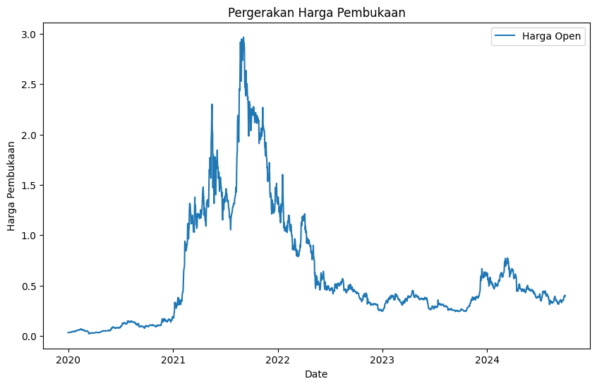
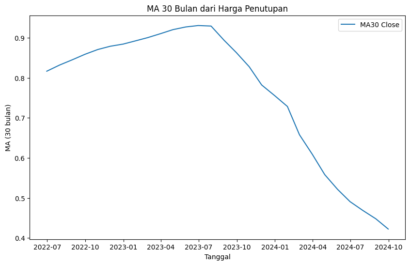
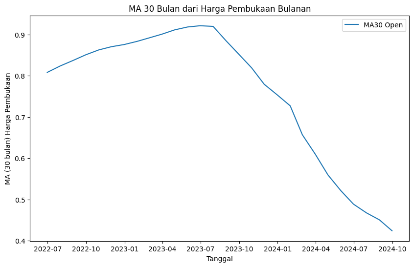
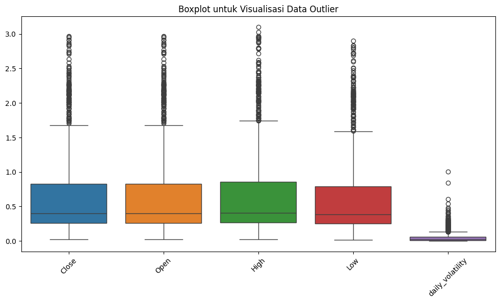

Prediksi Harga Mata Uang Kripto Cardano dengan Metode Bagging#
Import Library#
import pandas as pd
import numpy as np
import matplotlib.pyplot as plt
from sklearn.impute import KNNImputer
from sklearn.preprocessing import MinMaxScaler
from sklearn.model_selection import train_test_split
import seaborn as sns
from tqdm import tqdm
from sklearn.ensemble import BaggingRegressor, RandomForestRegressor
from sklearn.tree import DecisionTreeRegressor
from sklearn.linear_model import LinearRegression
from sklearn.model_selection import train_test_split
from sklearn.metrics import mean_squared_error, r2_score
---------------------------------------------------------------------------
ModuleNotFoundError Traceback (most recent call last)
Cell In[1], line 3
1 import pandas as pd
2 import numpy as np
----> 3 import matplotlib.pyplot as plt
4 from sklearn.impute import KNNImputer
5 from sklearn.preprocessing import MinMaxScaler
ModuleNotFoundError: No module named 'matplotlib'
Eksplorasi Data#
Memuat Data#
df = pd.read_csv('Data Historis Cardano.csv')
df.info()
<class 'pandas.core.frame.DataFrame'>
RangeIndex: 1735 entries, 0 to 1734
Data columns (total 7 columns):
# Column Non-Null Count Dtype
--- ------ -------------- -----
0 Tanggal 1735 non-null object
1 Terakhir 1735 non-null object
2 Pembukaan 1735 non-null object
3 Tertinggi 1735 non-null object
4 Terendah 1735 non-null object
5 Vol. 1730 non-null object
6 Perubahan% 1735 non-null object
dtypes: object(7)
memory usage: 95.0+ KB
df.rename(columns={
'Tanggal': 'Date',
'Terakhir': 'Close',
'Pembukaan': 'Open',
'Tertinggi': 'High',
'Terendah': 'Low',
'Vol.': 'Volume',
'Perubahan%': 'Change'
}, inplace=True)
df.head()
| Date | Close | Open | High | Low | Volume | Change | |
|---|---|---|---|---|---|---|---|
| 0 | 30/09/2024 | 0,3734 | 0,3976 | 0,3976 | 0,3709 | 143,27M | -6,07% |
| 1 | 29/09/2024 | 0,3976 | 0,4006 | 0,4041 | 0,3927 | 89,35M | -0,74% |
| 2 | 28/09/2024 | 0,4006 | 0,4017 | 0,4058 | 0,3924 | 102,69M | -0,27% |
| 3 | 27/09/2024 | 0,4017 | 0,4016 | 0,4153 | 0,3999 | 148,17M | 0,00% |
| 4 | 26/09/2024 | 0,4016 | 0,3811 | 0,4037 | 0,3782 | 165,03M | 5,38% |
Mengubah Tipe Data#
df['Change'] = df['Change'].str.replace('%', '').str.replace(',', '.').astype(float)
df.head()
| Date | Close | Open | High | Low | Volume | Change | |
|---|---|---|---|---|---|---|---|
| 0 | 30/09/2024 | 0,3734 | 0,3976 | 0,3976 | 0,3709 | 143,27M | -6.07 |
| 1 | 29/09/2024 | 0,3976 | 0,4006 | 0,4041 | 0,3927 | 89,35M | -0.74 |
| 2 | 28/09/2024 | 0,4006 | 0,4017 | 0,4058 | 0,3924 | 102,69M | -0.27 |
| 3 | 27/09/2024 | 0,4017 | 0,4016 | 0,4153 | 0,3999 | 148,17M | 0.00 |
| 4 | 26/09/2024 | 0,4016 | 0,3811 | 0,4037 | 0,3782 | 165,03M | 5.38 |
df['Volume'] = df['Volume'].str.replace('M', 'e6').str.replace('B', 'e9').str.replace(',', '.').astype(float)
df['Close'] = df['Close'].str.replace(',', '.').astype(float)
df['Open'] = df['Open'].str.replace(',', '.').astype(float)
df['High'] = df['High'].str.replace(',', '.').astype(float)
df['Low'] = df['Low'].str.replace(',', '.').astype(float)
df['Change'] = df['Change'].astype(float)
df.head()
| Date | Close | Open | High | Low | Volume | Change | |
|---|---|---|---|---|---|---|---|
| 0 | 30/09/2024 | 0.3734 | 0.3976 | 0.3976 | 0.3709 | 143270000.0 | -6.07 |
| 1 | 29/09/2024 | 0.3976 | 0.4006 | 0.4041 | 0.3927 | 89350000.0 | -0.74 |
| 2 | 28/09/2024 | 0.4006 | 0.4017 | 0.4058 | 0.3924 | 102690000.0 | -0.27 |
| 3 | 27/09/2024 | 0.4017 | 0.4016 | 0.4153 | 0.3999 | 148170000.0 | 0.00 |
| 4 | 26/09/2024 | 0.4016 | 0.3811 | 0.4037 | 0.3782 | 165030000.0 | 5.38 |
df['Date'] = pd.to_datetime(df['Date'])
/tmp/ipykernel_7496/2394721818.py:1: UserWarning: Parsing dates in %d/%m/%Y format when dayfirst=False (the default) was specified. Pass `dayfirst=True` or specify a format to silence this warning.
df['Date'] = pd.to_datetime(df['Date'])
df.info()
<class 'pandas.core.frame.DataFrame'>
RangeIndex: 1735 entries, 0 to 1734
Data columns (total 7 columns):
# Column Non-Null Count Dtype
--- ------ -------------- -----
0 Date 1735 non-null datetime64[ns]
1 Close 1735 non-null float64
2 Open 1735 non-null float64
3 High 1735 non-null float64
4 Low 1735 non-null float64
5 Volume 1730 non-null float64
6 Change 1735 non-null float64
dtypes: datetime64[ns](1), float64(6)
memory usage: 95.0 KB
Imputasi Missing Values#
df.isnull().sum()
Date 0
Close 0
Open 0
High 0
Low 0
Volume 5
Change 0
dtype: int64
imputer = KNNImputer(n_neighbors=2)
df_imputed = df.copy()
df_imputed[['Volume']] = imputer.fit_transform(df[['Volume']])
df = df_imputed
df.isnull().sum()
Date 0
Close 0
Open 0
High 0
Low 0
Volume 0
Change 0
dtype: int64
Visualisasi Data#
Pergerakan Harga Pembukaan#
plt.figure(figsize=(10, 6))
plt.plot(df['Date'], df['Open'], label='Harga Open')
plt.xlabel('Date')
plt.ylabel('Harga Pembukaan')
plt.title('Pergerakan Harga Pembukaan')
plt.legend()
plt.show()

Pergerakan Harga Penutupan#
# Mengubah kolom 'Date' menjadi tipe datetime
df['Date'] = pd.to_datetime(df['Date'], format='%d/%m/%Y')
# Mengatur 'Date' sebagai index
df.set_index('Date', inplace=True)
# Mengubah data harian menjadi data bulanan dengan mengambil harga penutupan terakhir setiap bulan
df_bulanan = df.resample('M').last()
# Plot harga penutupan bulanan
plt.figure(figsize=(10, 6))
plt.plot(df_bulanan.index, df_bulanan['Close'], label='Harga Penutupan Bulanan')
plt.xlabel('Date')
plt.ylabel('Harga Penutupan')
plt.title('Pergerakan Harga Penutupan Bulanan')
plt.legend()
plt.show()
/tmp/ipykernel_7496/3655211889.py:8: FutureWarning: 'M' is deprecated and will be removed in a future version, please use 'ME' instead.
df_bulanan = df.resample('M').last()
Harga Penutupan MA 30#
# Menghitung rata-rata bergerak (MA) untuk jendela 30 bulan
df_bulanan['MA30_Close'] = df_bulanan['Close'].rolling(window=30).mean()
# Plot rata-rata bergerak
plt.figure(figsize=(10, 6))
plt.plot(df_bulanan.index, df_bulanan['MA30_Close'], label='MA30 Close')
plt.xlabel('Tanggal')
plt.ylabel('MA (30 bulan)')
plt.title('MA 30 Bulan dari Harga Penutupan')
plt.legend()
plt.show()

Harga Pembukaan MA 30#
# Mengubah data harian menjadi data bulanan dengan mengambil harga pembukaan terakhir setiap bulan
df_bulanan['MA30_Open'] = df_bulanan['Open'].rolling(window=30).mean()
# Plot rata-rata bergerak harga pembukaan bulanan
plt.figure(figsize=(10, 6))
plt.plot(df_bulanan.index, df_bulanan['MA30_Open'], label='MA30 Open')
plt.xlabel('Tanggal')
plt.ylabel('MA (30 bulan) Harga Pembukaan')
plt.title('MA 30 Bulan dari Harga Pembukaan Bulanan')
plt.legend()
plt.show()

Volatilitas Harian#
# Menambahkan kolom volatilitas harian
df['daily_volatility'] = df['High'] - df['Low']
# Mengubah data harian menjadi data bulanan dengan mengambil volatilitas harian terakhir setiap bulan
df_bulanan['Volatilitas_Bulanan'] = df['daily_volatility'].resample('M').last()
# Plot volatilitas bulanan
plt.figure(figsize=(10, 6))
plt.plot(df_bulanan.index, df_bulanan['Volatilitas_Bulanan'], label='Volatilitas Bulanan')
plt.xlabel('Tanggal')
plt.ylabel('Volatilitas Bulanan')
plt.title('Volatilitas Bulanan Harga Cardano')
plt.legend()
plt.show()
/tmp/ipykernel_7496/142378207.py:5: FutureWarning: 'M' is deprecated and will be removed in a future version, please use 'ME' instead.
df_bulanan['Volatilitas_Bulanan'] = df['daily_volatility'].resample('M').last()
Volume Perdangan#
# Mengubah data harian menjadi data bulanan dengan menjumlahkan volume perdagangan setiap bulan
df_bulanan['Volume_Bulanan'] = df['Volume'].resample('M').sum()
# Plot volume perdagangan bulanan
plt.figure(figsize=(10, 6))
plt.plot(df_bulanan.index, df_bulanan['Volume_Bulanan'], label='Volume Perdagangan Bulanan')
plt.xlabel('Tanggal')
plt.ylabel('Volume Perdagangan')
plt.title('Volume Perdagangan Bulanan')
plt.legend()
plt.show()
/tmp/ipykernel_7496/1629643273.py:2: FutureWarning: 'M' is deprecated and will be removed in a future version, please use 'ME' instead.
df_bulanan['Volume_Bulanan'] = df['Volume'].resample('M').sum()
Korelasi Antar Variabel#
correlation_matrix = df.corr()
print(correlation_matrix)
plt.figure(figsize=(10, 8))
sns.heatmap(correlation_matrix, annot=True, cmap='coolwarm', linewidths=0.5)
plt.title('Correlation Matrix')
plt.show()
Close Open High Low Volume Change \
Close 1.000000 0.996477 0.998657 0.997674 0.046408 0.012080
Open 0.996477 1.000000 0.998114 0.996847 0.041480 -0.048996
High 0.998657 0.998114 1.000000 0.996172 0.061832 -0.012594
Low 0.997674 0.996847 0.996172 1.000000 0.016858 -0.015539
Volume 0.046408 0.041480 0.061832 0.016858 1.000000 0.156332
Change 0.012080 -0.048996 -0.012594 -0.015539 0.156332 1.000000
daily_volatility 0.729242 0.730996 0.751674 0.691147 0.384033 0.013115
daily_volatility
Close 0.729242
Open 0.730996
High 0.751674
Low 0.691147
Volume 0.384033
Change 0.013115
daily_volatility 1.000000
Pre-Processing Data#
Seleksi Fitur#
df.drop(columns=['Change', 'Volume'], inplace=True)
df.head()
| Close | Open | High | Low | daily_volatility | |
|---|---|---|---|---|---|
| Date | |||||
| 2024-09-30 | 0.3734 | 0.3976 | 0.3976 | 0.3709 | 0.0267 |
| 2024-09-29 | 0.3976 | 0.4006 | 0.4041 | 0.3927 | 0.0114 |
| 2024-09-28 | 0.4006 | 0.4017 | 0.4058 | 0.3924 | 0.0134 |
| 2024-09-27 | 0.4017 | 0.4016 | 0.4153 | 0.3999 | 0.0154 |
| 2024-09-26 | 0.4016 | 0.3811 | 0.4037 | 0.3782 | 0.0255 |
Penanganan Outlier#
plt.figure(figsize=(12, 6))
sns.boxplot(data=df[['Close', 'Open', 'High', 'Low', 'daily_volatility']])
plt.title('Boxplot untuk Visualisasi Data Outlier')
plt.xticks(rotation=45)
plt.show()

Menambah fitur#
df['Month'] = np.arange(1,len(df)+1)
df.info()
<class 'pandas.core.frame.DataFrame'>
DatetimeIndex: 1735 entries, 2024-09-30 to 2020-01-01
Data columns (total 6 columns):
# Column Non-Null Count Dtype
--- ------ -------------- -----
0 Close 1735 non-null float64
1 Open 1735 non-null float64
2 High 1735 non-null float64
3 Low 1735 non-null float64
4 daily_volatility 1735 non-null float64
5 Month 1735 non-null int64
dtypes: float64(5), int64(1)
memory usage: 94.9 KB
Normaliasi Data dengan Min-Max Scaling#
Modelling#
Alokasi Data Training dan Testing#
df.info()
<class 'pandas.core.frame.DataFrame'>
DatetimeIndex: 1735 entries, 2024-09-30 to 2020-01-01
Data columns (total 6 columns):
# Column Non-Null Count Dtype
--- ------ -------------- -----
0 Close 1735 non-null float64
1 Open 1735 non-null float64
2 High 1735 non-null float64
3 Low 1735 non-null float64
4 daily_volatility 1735 non-null float64
5 Month 1735 non-null int64
dtypes: float64(5), int64(1)
memory usage: 94.9 KB
def create_sliding_window_features(df, window_size, target_columns):
# Dataframe baru untuk menyimpan fitur sliding window
sliding_features = pd.DataFrame(index=df.index)
# Loop untuk setiap kolom target
for col in target_columns:
# Membuat fitur lag (sliding window) untuk setiap kolom
for lag in range(1, window_size + 1):
sliding_features[f'{col}_lag_{lag}'] = df[col].shift(lag)
# Drop missing values karena adanya shifting
sliding_features = sliding_features.dropna()
return sliding_features
# Kolom yang digunakan untuk sliding window (selain Date dan Month)
target_columns = ['Close', 'Open', 'High', 'Low', 'daily_volatility']
date_columns = ['Date', 'Month']
# Ukuran window (misal 12 hari)
window_size = 12
# Membuat dataset dengan fitur sliding window
df_sliding = create_sliding_window_features(df, window_size, target_columns)
# Menampilkan hasil
df_sliding.head()
| Close_lag_1 | Close_lag_2 | Close_lag_3 | Close_lag_4 | Close_lag_5 | Close_lag_6 | Close_lag_7 | Close_lag_8 | Close_lag_9 | Close_lag_10 | ... | daily_volatility_lag_3 | daily_volatility_lag_4 | daily_volatility_lag_5 | daily_volatility_lag_6 | daily_volatility_lag_7 | daily_volatility_lag_8 | daily_volatility_lag_9 | daily_volatility_lag_10 | daily_volatility_lag_11 | daily_volatility_lag_12 | |
|---|---|---|---|---|---|---|---|---|---|---|---|---|---|---|---|---|---|---|---|---|---|
| Date | |||||||||||||||||||||
| 2024-09-18 | 0.3510 | 0.3522 | 0.3583 | 0.3517 | 0.3638 | 0.3876 | 0.3811 | 0.4016 | 0.4017 | 0.4006 | ... | 0.0092 | 0.0160 | 0.0197 | 0.0330 | 0.0142 | 0.0255 | 0.0154 | 0.0134 | 0.0114 | 0.0267 |
| 2024-09-17 | 0.3438 | 0.3510 | 0.3522 | 0.3583 | 0.3517 | 0.3638 | 0.3876 | 0.3811 | 0.4016 | 0.4017 | ... | 0.0122 | 0.0092 | 0.0160 | 0.0197 | 0.0330 | 0.0142 | 0.0255 | 0.0154 | 0.0134 | 0.0114 |
| 2024-09-16 | 0.3339 | 0.3438 | 0.3510 | 0.3522 | 0.3583 | 0.3517 | 0.3638 | 0.3876 | 0.3811 | 0.4016 | ... | 0.0125 | 0.0122 | 0.0092 | 0.0160 | 0.0197 | 0.0330 | 0.0142 | 0.0255 | 0.0154 | 0.0134 |
| 2024-09-15 | 0.3302 | 0.3339 | 0.3438 | 0.3510 | 0.3522 | 0.3583 | 0.3517 | 0.3638 | 0.3876 | 0.3811 | ... | 0.0165 | 0.0125 | 0.0122 | 0.0092 | 0.0160 | 0.0197 | 0.0330 | 0.0142 | 0.0255 | 0.0154 |
| 2024-09-14 | 0.3386 | 0.3302 | 0.3339 | 0.3438 | 0.3510 | 0.3522 | 0.3583 | 0.3517 | 0.3638 | 0.3876 | ... | 0.0143 | 0.0165 | 0.0125 | 0.0122 | 0.0092 | 0.0160 | 0.0197 | 0.0330 | 0.0142 | 0.0255 |
5 rows × 60 columns
from sklearn.metrics import mean_absolute_percentage_error
def evaluate_model(y_test, y_pred, model_name):
mse = mean_squared_error(y_test, y_pred)
rmse = np.sqrt(mse)
r2 = r2_score(y_test, y_pred)
mape = mean_absolute_percentage_error(y_test, y_pred)
print(f"{model_name} - MSE: {mse}, RMSE: {rmse}, R-squared: {r2}, MAPE: {mape}")
# Evaluasi setiap model
evaluate_model(y_test, y_pred_dt, "Bagging Decision Tree Regressor")
evaluate_model(y_test, y_pred_rf, "Random Forest Regressor")
evaluate_model(y_test, y_pred_lr, "Bagging Linear Regressor")
Bagging Decision Tree Regressor - MSE: 0.0002736739558994198, RMSE: 0.016543093903481892, R-squared: 0.9992085353145198, MAPE: 0.00789056829848538
Random Forest Regressor - MSE: 0.0002451106460348171, RMSE: 0.0156560099014665, R-squared: 0.9992911403654242, MAPE: 0.007930924822900002
Bagging Linear Regressor - MSE: 1.5124414837784704e-06, RMSE: 0.0012298135971676644, R-squared: 0.9999956260214118, MAPE: 0.0008646936012861002
import pandas as pd
import numpy as np
import matplotlib.pyplot as plt
from sklearn.ensemble import BaggingRegressor, RandomForestRegressor
from sklearn.tree import DecisionTreeRegressor
from sklearn.linear_model import LinearRegression
from sklearn.model_selection import train_test_split
# Misalkan df_sliding sudah tersedia
# Pastikan kita memiliki data dari 12 bulan terakhir untuk prediksi
# 1. Dataframe Sliding Window
X = df_sliding.drop(columns=['Close_lag_1']) # Mengambil fitur
y = df_sliding['Close_lag_1'] # Target
# 2. Membagi data menjadi training dan testing set
X_train, X_test, y_train, y_test = train_test_split(X, y, test_size=0.3, random_state=42)
# 3. Melatih Model
dt_regressor = DecisionTreeRegressor()
bagging_dt = BaggingRegressor(estimator=dt_regressor, n_estimators=10, random_state=42)
bagging_dt.fit(X_train, y_train)
# 4. Melakukan prediksi untuk 12 bulan ke depan
# Mengambil data fitur terakhir untuk prediksi
latest_data = X.iloc[-1].values.reshape(1, -1) # Ambil baris terakhir dari fitur dan reshape
predictions = []
for _ in range(12): # Lakukan prediksi 12 kali (untuk 12 bulan ke depan)
# Prediksi untuk bulan berikutnya
next_pred = bagging_dt.predict(latest_data)[0]
predictions.append(next_pred)
# Siapkan data untuk prediksi berikutnya (sliding window)
# Misalnya, kita menambahkan lag baru
new_row = np.append(latest_data, next_pred) # Tambahkan prediksi baru
# Jika ada fitur lain, pastikan untuk memperbarui mereka di sini
# Update latest_data untuk iterasi berikutnya
latest_data = new_row[1:].reshape(1, -1) # Mengambil semua kecuali prediksi baru
# Konversi hasil prediksi ke DataFrame
predictions_df = pd.DataFrame(predictions, columns=['Predicted_Close'])
predictions_df['Month'] = pd.date_range(start=pd.to_datetime('today'), periods=12, freq='M')
# Menampilkan hasil prediksi
print(predictions_df)
# Visualisasi hasil prediksi
plt.figure(figsize=(10, 5))
plt.plot(predictions_df['Month'], predictions_df['Predicted_Close'], marker='o', color='orange', label='Predicted Close')
plt.title('Predicted Close Price for the Next 12 Months')
plt.xlabel('Month')
plt.ylabel('Predicted Close Price')
plt.legend()
plt.xticks(rotation=45)
plt.tight_layout()
plt.show()
Predicted_Close Month
0 0.03327 2024-10-31 09:29:17.823909
1 0.03404 2024-11-30 09:29:17.823909
2 0.03435 2024-12-31 09:29:17.823909
3 0.03432 2025-01-31 09:29:17.823909
4 0.03612 2025-02-28 09:29:17.823909
5 0.03760 2025-03-31 09:29:17.823909
6 0.03714 2025-04-30 09:29:17.823909
7 0.03496 2025-05-31 09:29:17.823909
8 0.03535 2025-06-30 09:29:17.823909
9 0.03566 2025-07-31 09:29:17.823909
10 0.03582 2025-08-31 09:29:17.823909
11 0.03175 2025-09-30 09:29:17.823909
/home/wchynto/media/data/Personal/Kuliah/PSD/prediksi-harga-cardano/.venv/lib/python3.12/site-packages/sklearn/base.py:493: UserWarning: X does not have valid feature names, but BaggingRegressor was fitted with feature names
warnings.warn(
/home/wchynto/media/data/Personal/Kuliah/PSD/prediksi-harga-cardano/.venv/lib/python3.12/site-packages/sklearn/base.py:493: UserWarning: X does not have valid feature names, but BaggingRegressor was fitted with feature names
warnings.warn(
/home/wchynto/media/data/Personal/Kuliah/PSD/prediksi-harga-cardano/.venv/lib/python3.12/site-packages/sklearn/base.py:493: UserWarning: X does not have valid feature names, but BaggingRegressor was fitted with feature names
warnings.warn(
/home/wchynto/media/data/Personal/Kuliah/PSD/prediksi-harga-cardano/.venv/lib/python3.12/site-packages/sklearn/base.py:493: UserWarning: X does not have valid feature names, but BaggingRegressor was fitted with feature names
warnings.warn(
/home/wchynto/media/data/Personal/Kuliah/PSD/prediksi-harga-cardano/.venv/lib/python3.12/site-packages/sklearn/base.py:493: UserWarning: X does not have valid feature names, but BaggingRegressor was fitted with feature names
warnings.warn(
/home/wchynto/media/data/Personal/Kuliah/PSD/prediksi-harga-cardano/.venv/lib/python3.12/site-packages/sklearn/base.py:493: UserWarning: X does not have valid feature names, but BaggingRegressor was fitted with feature names
warnings.warn(
/home/wchynto/media/data/Personal/Kuliah/PSD/prediksi-harga-cardano/.venv/lib/python3.12/site-packages/sklearn/base.py:493: UserWarning: X does not have valid feature names, but BaggingRegressor was fitted with feature names
warnings.warn(
/home/wchynto/media/data/Personal/Kuliah/PSD/prediksi-harga-cardano/.venv/lib/python3.12/site-packages/sklearn/base.py:493: UserWarning: X does not have valid feature names, but BaggingRegressor was fitted with feature names
warnings.warn(
/home/wchynto/media/data/Personal/Kuliah/PSD/prediksi-harga-cardano/.venv/lib/python3.12/site-packages/sklearn/base.py:493: UserWarning: X does not have valid feature names, but BaggingRegressor was fitted with feature names
warnings.warn(
/home/wchynto/media/data/Personal/Kuliah/PSD/prediksi-harga-cardano/.venv/lib/python3.12/site-packages/sklearn/base.py:493: UserWarning: X does not have valid feature names, but BaggingRegressor was fitted with feature names
warnings.warn(
/home/wchynto/media/data/Personal/Kuliah/PSD/prediksi-harga-cardano/.venv/lib/python3.12/site-packages/sklearn/base.py:493: UserWarning: X does not have valid feature names, but BaggingRegressor was fitted with feature names
warnings.warn(
/home/wchynto/media/data/Personal/Kuliah/PSD/prediksi-harga-cardano/.venv/lib/python3.12/site-packages/sklearn/base.py:493: UserWarning: X does not have valid feature names, but BaggingRegressor was fitted with feature names
warnings.warn(
/tmp/ipykernel_7496/543058440.py:45: FutureWarning: 'M' is deprecated and will be removed in a future version, please use 'ME' instead.
predictions_df['Month'] = pd.date_range(start=pd.to_datetime('today'), periods=12, freq='M')